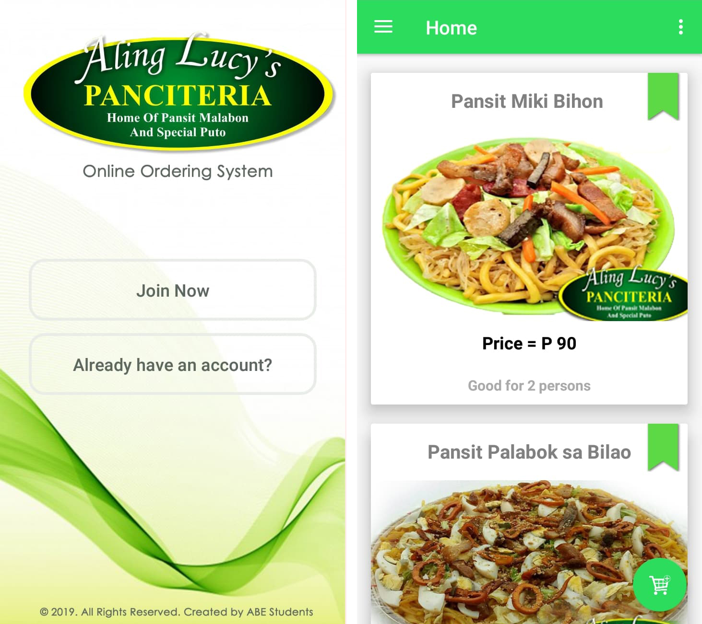
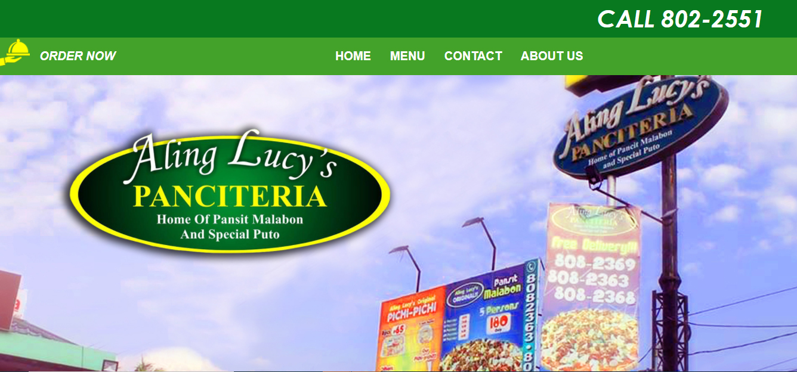
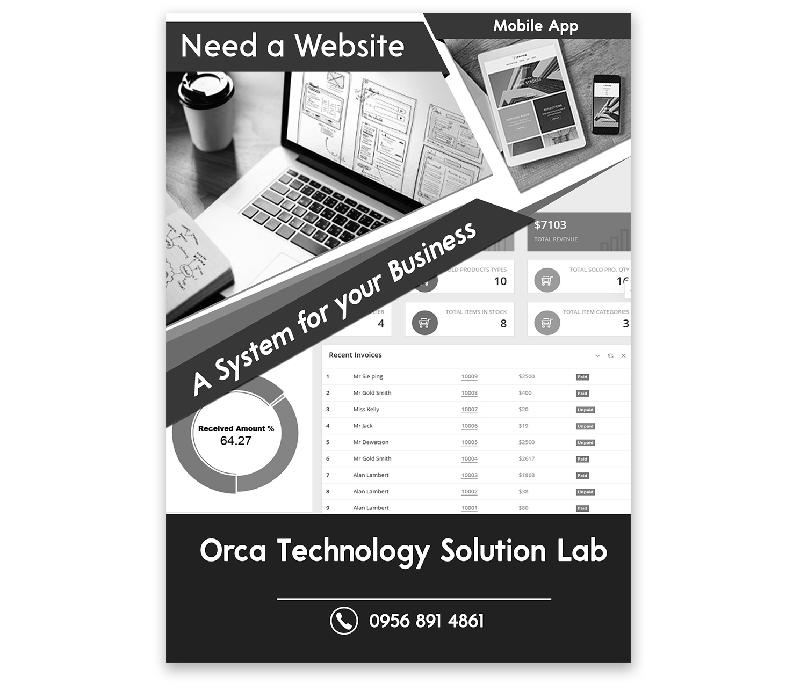

Projects
Mobile Online Ordering System
A project for Aling Lucy's Panciteria to build
mobile online food ordering system that helps the restaurant’s owners to upload
their menus online so that they can be easily managed or changed and customers can
order online for their favorite cuisines. More over, recipes can be customized according to
the taste and preferences of the customers.
Korean Language Tutorial App

The development of K-WAVE Korean Language (Mobile Tutorial Application) aimed to provide aim to
provide users to effectively learn Korean words by the provided basic lessons and quizzes where
they can enhance learnings for Korean language.
The preliminary investigation has helped identify difficulties on managing the whole process.
Conducting a survey is the primary way on gathering data and other than that data was also gathered
from books from the libraries and internet.
Online Ordering System Website
This project was conducted for the purpose of knowing the influence of online ordering system,
their impact on customers, and how the customers want the system to be designed. The descriptive
method of research was applied, and the survey technique was utilized. The primary instrument
used to gather data are the questionnaire and an interview was used to the store’s manager to
gather information regarding their usual routines in the store.
Banner
